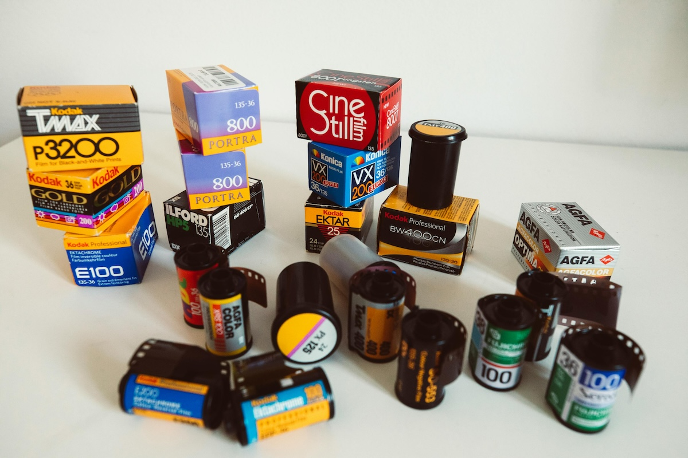

Fotoğrafta ISO Nedir? ISO Ayarları Hakkında Bilmeniz Gereken Her Şey
Fotoğrafçılıkla ilgilenmeye başladığınızda karşınıza çıkan en temel kavramlardan biri “ISO” olacaktır. ISO, bir görüntünün parlaklığını kontrol etmenin en önemli yollarından biridir. Fotoğraf makinenizde ISO ayarlarını doğru bir şekilde kullanarak, farklı ışık koşullarında harika kareler yakalayabilirsiniz. Peki ISO tam olarak nedir ve nasıl kullanılır? İşte bu yazıda, ISO’nun ne olduğunu ve fotoğrafçılığınıza nasıl etki edeceğini adım adım açıklayacağım.
ISO Nedir?
ISO, dijital fotoğrafçılıkta sensörün ışığa olan hassasiyetini belirleyen bir ölçüdür. Daha basit bir ifadeyle, ISO değeri ne kadar düşükse sensörünüz o kadar az ışığa duyarlıdır; ISO değeri ne kadar yüksekse sensörünüz o kadar fazla ışığa duyarlıdır. ISO’nun doğrudan etkilediği şey ise görüntünün parlaklığıdır.
Eskiden analog filmli fotoğraf makinelerinde, ISO yerine “film hızı” terimi kullanılırdı ve bu terim, filmin ışığa duyarlılığını ifade ederdi. Dijital fotoğrafçılıkta ise bu hassasiyet ayarı elektronik olarak yapılır.
ISO Değerleri Nasıl Çalışır?
ISO değerleri genellikle 100, 200, 400, 800, 1600, 3200 gibi sayılarla ifade edilir. Bu sayılar, sensörün ışığa ne kadar duyarlı olduğunu gösterir. Düşük ISO değerleri (100-200) genellikle parlak, aydınlık ortamlarda kullanılırken, yüksek ISO değerleri (1600 ve üzeri) daha karanlık, düşük ışık koşullarında tercih edilir.
Örneklerle daha iyi anlayalım:
- ISO 100: Parlak, güneşli bir günde dış mekanda çekim yaparken kullanabileceğiniz ideal bir değerdir. Görüntüde minimum kumlanma (noise) olur ve fotoğraflar son derece net görünür.
- ISO 800: İç mekanda ya da bulutlu bir havada çekim yapıyorsanız ve tripod kullanmak istemiyorsanız tercih edebilirsiniz. Biraz kumlanma olabilir ancak çoğu durumda kabul edilebilir seviyede olur.
- ISO 3200 ve üzeri: Gece çekimlerinde ya da çok düşük ışık koşullarında bu ISO değerlerini kullanmak zorunda kalabilirsiniz. Ancak dikkat etmeniz gereken şey, bu seviyede kumlanma oldukça belirgin hale gelir.
ISO, Diyafram ve Enstantane Üçlüsü: Pozlama Üçgeni
ISO, fotoğraf makinenizdeki üç temel pozlama ayarından biridir. Diğer iki ayar ise diyafram (Aperture) ve enstantane hızı (Shutter Speed)’dir. Bu üçlü, pozlama üçgeni olarak bilinir ve bir fotoğrafın parlaklığını ve netliğini ayarlamak için birbiriyle dengelenir.
- Diyafram (Aperture): Lensin ışığı ne kadar içeri aldığıyla ilgilidir. F-stop değerleriyle ifade edilir (örneğin f/2.8, f/5.6). Düşük f-stop değerleri, daha fazla ışık alırken yüksek değerler daha az ışık alır.
- Enstantane Hızı (Shutter Speed): Sensörün ışığa ne kadar süreyle maruz kaldığını belirler. Hızlı enstantane değerleri hareketli nesneleri dondurur, yavaş enstantane değerleri ise hareketi bulanıklaştırır.
- ISO: Işığın az olduğu durumlarda bu üçlü içinde ISO’yu artırarak doğru pozlamayı sağlayabilirsiniz. Ancak bunu yaparken görüntü kalitesinden ödün vermemek için dikkatli olmak gerekir.
ISO’yu Ne Zaman Yükseltmelisiniz?
ISO’yu yükseltmek, genellikle düşük ışık koşullarında gereklidir. Ancak her durumda ISO’yu artırmak en iyi çözüm olmayabilir. ISO’yu ne zaman yükseltmeniz gerektiğine dair birkaç ipucu:
- Tripod Kullanmadığınızda: Düşük ışık koşullarında tripodunuz yoksa ISO’yu yükseltmek en iyi seçenektir. Enstantane hızını yavaşlatarak bulanık fotoğraflar elde etmek yerine, ISO’yu artırarak hareketi sabitleyebilirsiniz.
- Kapalı Alanlarda: İç mekanlarda ya da bulutlu havalarda doğal ışık az olabilir. ISO’yu yükselterek daha parlak bir görüntü elde edebilirsiniz.
- Gece Fotoğrafçılığı: Sokak lambaları ya da loş ortamlarda fotoğraf çekerken ISO’yu artırmak gerekebilir. Ancak bu durumda kumlanmanın artacağını unutmamalısınız.
Yüksek ISO’nun Dezavantajları
ISO’yu artırmak ışık hassasiyetini artırırken, görüntü kalitesini de etkiler. ISO değeri yükseldikçe fotoğraflarda kumlanma (noise) denilen dijital gürültü artar. Bu da görüntünün daha grenli ve kalitesiz görünmesine neden olabilir. Profesyonel fotoğraf makineleri, yüksek ISO değerlerinde daha az kumlanma yaratacak şekilde tasarlanmış olsa da, özellikle akıllı telefon ya da giriş seviyesi kameralarla çekim yaparken bu sorun daha belirgin hale gelir.

ISO Ayarlarını Nasıl Kontrol Etmelisiniz?
Fotoğraf makineniz genellikle otomatik ISO ayarına sahip olacaktır. Bu modda kamera, ortamın ışık koşullarına göre en uygun ISO değerini seçer. Ancak manuel modda çekim yapıyorsanız, ISO’yu kendiniz ayarlayarak daha yaratıcı sonuçlar elde edebilirsiniz.
- ISO 100-200: Gün ışığında dış mekanda çekim yaparken.
- ISO 400-800: Bulutlu havalarda ya da iç mekanlarda.
- ISO 1600 ve üzeri: Gece fotoğrafçılığı veya çok düşük ışık koşullarında.
ISO’yu Doğru Kullanarak Daha İyi Fotoğraflar Çekin
ISO ayarları, fotoğraflarınızın kalitesi üzerinde büyük bir etkiye sahiptir. Her zaman mümkün olduğunca düşük bir ISO değeri kullanmaya çalışın, ancak düşük ışık koşullarında ISO’yu artırmaktan çekinmeyin. Önemli olan, ISO, diyafram ve enstantane hızı arasındaki dengeyi kurarak en iyi pozlamayı elde etmektir.
Bir dahaki sefere fotoğraf çekerken ISO ayarlarını deneyimlemekten çekinmeyin. Farklı ışık koşullarında nasıl sonuçlar aldığınızı gözlemleyerek fotoğrafçılık yeteneklerinizi bir üst seviyeye taşıyabilirsiniz.